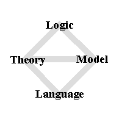
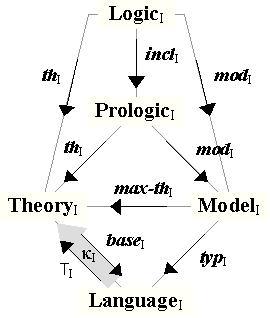

| Institutions |
| The Grothendieck Construction |
| The Information Flow (IF)
Institution |
This paper owes a special debt of thanks to Joseph Goguen. The idea
of applying Institutions and the Grothendieck construction to
Formal Concept Analysis and Information Flow was pioneered in his
online paper Information
Flow in Institutions currently under development.
| A central goal of the Information Flow Framework (IFF) project is to specify a theoretical framework for representing and managing ontologies. This theoretical framework is concentrated around the concept of a logical environment. The concept of a logical environment is the concept of a "structured institution". As stated on the Institutions homepage, the concept of an institution formalizes, represents, implements and translates the notion of "a logic". The literature on institutions now comprises hundreds of papers. The concept of a logical environment has been discussed within the SUO IFF project during the past several years. The "structured" aspect of a logical environment is iconically illustrated in Figure 1. This architecture consists of the four representative concepts of language, model, theory and logic, and the five natural connections between these concepts. There is a formal-actual distinction present within this architecture. The type pole of formality consists of languages and theories. Languages, known as signatures in the institutions literature, represent the basic formalism; theories add constraints. The instance pole of actuality consists of models and logics. Models contain instance data and classifications; logics add constraints. Theories represent formal semantics, models represent actual/interpretive semantics, and logics represent combined semantics. Unpopulated ontologies manifesting formal semantics are represented in the IFF by theories, whereas populated ontologies incorporating actual semantics (aspects of the natural world) are represented in the IFF by logics. |  |
| Figure 1 |
As discussed in the paper (Kent, 2000), a simple notion of a logical environment appears as the background architecture for Information Flow. Call this the IF logical environment. This was the original logical environment. Figure 2 of Kent, 2000 illustrates the categories and adjunctions that form the IF logical environment. Models are IF classifications, sentences are IF sequents, and logics are IF normal logics. The lower part of Figure 2, regarded as an environment architectural diagram, is absent due to simplicity – languages are just sets regarded as sets of type symbols, and the free model adjunction is just the free classification adjunction over type symbol sets.
The concept of a logical environment is pictured in the architecture diagram (Figure 1) on the introduction webpage for the IFF Ontology (meta) Ontology (IFF-ONT), and is theoretically discussed in the associated document "Category Theory of Ontologies". Call this the IFF logical environment. This environment, which is illustrated in Figure 1 of the document IFF-ONT work-in-progress, was briefly discussed in a presentation on the the IFF metastack at the category theory conference CT04.
A goal of this paper is to make the presentation of logical environments a little more precise and understandable.
In this document, institutions are viewed abstractly. Associated with an institution I is a category SignI of signatures and signature morphisms, a model functor ModI : SignIop → Cat, and a sentence functor SenI : SignI → Set. Recall the underlying object functor |-| : Cat → Set that maps a category to its set of objects and maps a functor to its object function. Define the underlying model functor |Mod|I = ModI · |-| : SignIop → Set. Also associated with an institution I is a collection of binary incidence relations indexed by signatures. For any signature Σ, there is a satisfaction relation |=I(Σ) between |Mod|I(Σ) and SenI(Σ). This following condition expresses the invariance of truth under change of notation. Note that for signatures Σ the morphisms in the fiber categories Mod(Σ) are not used in this satisfaction condition.
Satisfaction Condition. For any signature morphism f : Σ → Σ′, any Σ′-model M′ and any Σ-sentence e, M′ |=I(Σ′) SenI(f)(e) iff |Mod|I(f)(M′) |=I(Σ) e.Truth is objectively represented. For any signature Σ, the triple ClsnI(Σ) = (|Mod|I(Σ), SenI(Σ), |=I(Σ)) is called the truth classification of Σ. From the basic theorem of FCA, this is equivalent to a concept lattice CnLatI(Σ) called the truth concept lattice of Σ, which consists of a complete lattice LatI(Σ) = (ClothI(Σ), ≤I(Σ), VI(Σ), ΛI(Σ)), a model embedding map ιI(Σ) : |Mod|I(Σ) → ClothI(Σ) that maps a model to its maximal theory consisting of the set of all sentences that it satisfies, and a sentence embedding map τI(Σ) : SenI(Σ) → ClothI(Σ) that maps a sentence to its entailment theory consisting of the set of all sentences that it entails. In general, the elements of any concept lattice can be represented by their intents. That is the case here. The truth concept lattice elements are represented by their intents ClothI(Σ), the closed theories of Σ, and the lattice order ≤I(Σ) is reverse subset inclusion: T ≤ T′ iff T ⊇ T′. The join VI(Σ) and meet ΛI(Σ) operators are described as follows: the join of a collection of closed theories T is their intersection VT = ∩T, and the meet is the closure of their union ΛT = (∪T)•. Any concept (closed theory) is the join of a subset of instance concepts (model theories) and the meet of a subset of type concepts (sentence theories).
A (not necessarily closed) theory is just a set of sentences. For any signature Σ, the free theory order Th°I(Σ) = (PSenI(Σ), ⊇) is just the powerset construction on sentences of Σ with the reverse subset inclusion order. This is a complete lattice. For any signature Σ, the free classification FreeI(Σ) = (PSenI(Σ), SenI(Σ), ∋) has theories as instances, sentences as types and reverse membership as incidence relation. There is a canonical intent infomorphism IntentI(Σ) : FreeI(Σ) → ClsnI(Σ), whose instance function max-thI(Σ) : |Mod|I(Σ) → PSenI(Σ) maps a model to its maximal theory and whose type function is the identity on sentences. The free concept lattice is the concept lattice associated with the free classification; it has the free theory order as its complete lattice, identity instance embedding, and singleton type embedding functions. The concept morphism associated with the intent infomorphism has maximal theory as its instance function, inclusion of closed theories as theories as its left adjoint, theory closure as its right adjoint, and singleton closure as its type function.
For any signature morphism f : Σ → Σ′, there are (at least) two maps between theory orders; the direct image function dirI(f) : PSenI(Σ) → PSenI(Σ′) is the direct power operator applied to the sentence function, and the inverse image function invI(f) : PSenI(Σ′) → PSenI(Σ) is the inverse image operator applied to the sentence function. For free theories these form a Galois connection – the inverse image function is left adjoint to the direct image function. Hence, associated with an institution I is a free theory functor for either adjoint; let Th°I : SignIop → Cat represent the free theory functor associated with the inverse image operator. Using the Grothendieck construction to generate a category, the adjointness properties mean that the associated signature projection is a bifibration.
Truth extends to morphisms. Based upon the satisfaction condition for institutions, associated with any signature morphism f : Σ → Σ′ is a truth infomorphism ClsnI(f) = (|Mod|I(f), SenI(f)) : ClsnI(Σ) → ClsnI(Σ′), whose instance function is the model function |Mod|I(f) : |Mod|I(Σ′) → |Mod|I(Σ) and whose type function is the sentence function SenI(f) : SenI(Σ) → SenI(Σ′). From the basic theorem of FCA, this is equivalent to a concept morphism CnLatI(f) = (|Mod|I(f), SenI(f), LeftI(f), RightI(f)) : CnLatI(Σ) → CnLatI(Σ′) called the truth concept morphism of f, which consists of the two component maps of ClsnI(f), plus a Galois connection consisting of a left adjoint monotonic function LeftI(f) : LatI(Σ′) → LatI(Σ), and a right adjoint monotonic function RightI(f) : LatI(Σ) → LatI(Σ′). Adjointness means that LeftI(f)(T′) ≤I(Σ) T iff T′ ≤I(Σ′) RightI(f)(T) for every closed source theory T ∈ LatI(Σ) and every closed target theory T′ ∈ LatI(Σ′). The left adjoint is compatible with the model function ιI(Σ′) · LeftI(f) = |Mod|I(f) · ιI(Σ), and the right adjoint is compatible with the sentence function SenI(f) · τI(Σ′) = τI(Σ) · RightI(f). Pointwise on theories, the left adjoint is the inverse image function invI(f) restricted to closed theories, and the right adjoint is the composition of the restriction of the direct image function dirI(f) and the theory closure function. Hence, associated with an institution I is a theory functor for either adjoint. When using the Grothendieck construction to generate a category of theories, the adjointness properties mean that the associated signature projection is a bifibration. Let ThI : SignIop → Cat represent the theory functor associated with the inverse image function invI(f).
These truth constructions are functorial. Associated with an institution I is the truth classification functor ClsnI : SignI → Clsn from the category of signatures and signature morphisms to the category of classifications and infomorphisms. By the categorical version of the FCA basic theorem (Kent, 2002), there is an equivalence Clsn ≡ CnLat, where CnLat is the category of concept lattices and their morphisms. Hence, also associated with an institution I is the concept lattice functor CnLatI : SignI → CnLat. The category Clsn has two projection functors (fibrations), the instance functor inst : Clsnop → Set and the type functor typ : Clsn → Set. By composing the truth classification functor with these two projections, we can unpack it into the underlying model functor |Mod|I = ClsnIop · inst : SignIop → Set and the sentence functor SenI = ClsnI · typ : SignI → Set.
The Grothendieck construction is discussed in Appendix A of the draft paper "Information Flow in Institutions". Let I be any institution. It is understood that satisfaction is at the heart of institutions, and the satisfaction condition expresses the invariance of truth under change of notation. However, more is desired. We also want satisfaction to vary appropriately along model morphisms as expressed by the following.
Model Variance Condition: For any signature Σ, satisfaction varies along model morphisms in the category ModI(Σ) in the following sense: for any model morphism h : M1 → M2 in ModI(Σ) and for any sentence e ∈ SenI(Σ), if M2 |=I(Σ) e then M1 |=I(Σ) e.
An institution I that satisfies the model variance condition is called an orthovariant institution. Assume that I is orthovariant. Define the Grothendieck model category ModelI = Gr(ModI) and the Grothendieck theory category TheoryI = Gr(ThI). Define the projection functors (fibrations) typI : ModelI → SignI and baseI : TheoryI → SignI. These two categories are the vertices in the horizontal axis of the diagrams in Figure 2 (below), and these two projection functors form the opspan below this horizontal axis. The model variance condition implies that the maximal theory operator has the following property: max-thI(M1) ⊇ max-thI(M2), which is expressible as max-thI(M1) ≤ max-thI(M2) in the truth concept lattice order. Hence, for any signature Σ, the maximal theory operator is a functor max-thI(Σ) : ModI(Σ) → ThI(Σ). The satisfaction condition implies that maximal theory is a natural transformation max-thI : ModI ⇒ ThI from the model functor to the theory functor. Proof: Let f : Σ → Σ′ be any signature morphism, and let M′ ∈ ModI(Σ′) be any model of the target signature. For any sentence e ∈ SenI(Σ) of the source signature, e ∈ max-thI(Σ)(ModI(f)(M′)) iff ModI(f)(M′) |=I(Σ) e iff M′ |=I(Σ′) SenI(f)(e) iff SenI(f)(e) ∈ max-thI(M′) iff e ∈ invI(f)(max-thI(Σ′)(M′)) iff e ∈ ThI(f)(max-thI(M′)) ♦. Applying the Grothendieck construction to this maximal theory natural transformation results in a functor max-thI : ModelI → TheoryI that commutes with the signature projections (fibrations). This is the horizontal axis in the diagrams in Figure 2. Functoriality of the maximal theory operator is dependent upon the model variance condition.
|  |
| Logical Environment |
| Figure 2 |
Explain the details of a concept morphism, especially one arising from
an infomorphism.
Explain the initial (intent) and final (extent) infomorphisms in a
fiber. Define their associated concept morphisms. This gives a nice
representation of the connections between the instance/type power sets
and the concept lattice of a classification.
Illustrate and explain the functors in the architectural diagram that arise from any institution I. Add the restriction functor forming part of a reflection with inclusion of logics into prologics.
A prologic L = (T, M) is a
theory-model pair that share the same signature Σ. The category
of prologics PrologicI
is the pullback (fibered product) in CAT
over the projection opspan under the categories TheoryI and ModelI. Note that the
model component of a prologic may satisfy only part of the theory
component of the prologic; that is, only part of the model M is
"normal" with respect to the theory T. A logic is a prologic that is
normal; that is, a logic L = (T, M) is a prologic, where M |=I(Σ)
e for all e ∈ thmI(T);
that is, where max-thI(M)
⊇ axmI(T);
or equivalently, where max-thI(M)
≤ T. Let LogicI
denote the full subcategory of logics in PrologicI with logic
inclusion functor inclI : LogicI → PrologicI.
As shown above, in a general sense institutions are closely related to Information Flow. However, there is also a special sense in which these two theories are related. This is represented by a naturally defined institution for Information Flow. Here, we discuss this institution in some detail. First we do some review.
For any set A (of elements considered as instances), let Inst(A) = inst−1(A) ⊆ Clsn denote the subcategory of all classifications whose instance set is A and all infomorphisms whose instance function is 1A. For any function f : A′ → A (regarded as an instance map), let Inst(f) : Inst(A) → Inst(A′) denote the functor whose object function maps a classification A ∈ Inst(A) to the classification Inst(f)(A) = (A′, typ(A), |=) ∈ Inst(B), where b |= α when f(b) |=A α in classification A, and whose morphism function maps an infomorphism f = (1A, typ(f)) : A1 → A2 in Inst(A) to the infomorphism Inst(f)(f) = (1A′, typ(f)) : Inst(f)(A1) → Inst(f)(A2) in Inst(A′). This instance construction forms an indexed category Inst : Setop → CAT. [NEEDS WORK].
Dually, for any set Σ (of elements considered as types), let Typ(Σ) = typ−1(Σ) ⊆ Clsn denote the subcategory of all classifications whose type set is Σ and all infomorphisms whose type function is 1Σ. Considering the type symbols Σ to be unary predicate symbols, a classification A in the fiber Typ(Σ) can be regarded as a model for Σ consisting of a set of instances inst(A) called the (relative) universe of A and a map ext(A) : Σ → P(inst(A)) called the extension function of A, which that maps predicate symbols to subsets of the universe where those symbols are "true", and an infomorphism f : A → B in Typ(Σ) can be regarded as a model morphism consisting of a universe map inst(f) : inst(B) → inst(A) that preserves extensions in the sense that extB(α) = f−1(extA(α)) for all unary predicate symbols α ∈ Σ. For any function f : Σ → Σ′ (regarded as a type map), let Typ(f) : Typ(Σ′) → Typ(Σ) denote the functor whose object function maps a classification B ∈ Typ(Σ′) to the classification Typ(f)(B) = (inst(B), Σ, |=) ∈ Typ(Σ), where b |= a when b |=B f(a) in classification B, and whose morphism function maps an infomorphism f = (inst(f), 1B) : B1 → B2 in Typ(Σ′) to the infomorphism Typ(f)(f) = (inst(f), 1A) : Typ(f)(B1) → Typ(f)(B2) in Typ(Σ). The type construction forms an indexed category Typ : Setop → CAT. The Grothendieck category Gr(Typ) is isomorphic to Clsn and the Grothendieck projection functor is isomorphic to typ : Clsn → Set.
For any set Σ (of elements considered
as types), a sequent
of Σ is a pair σ = (Γ, Δ) of subsets of Σ. The
subset Γ ⊆ Σ is called the antecedent of σ and the subset Δ ⊆ Σ is
called the consequent of σ. The meaning of a sequent is that the
antecedent is regarded in a conjunctive sense, the consequent is
regarded in a disjunctive sense, and the relation between them is
regarded in an implicative sense. The binary power Seq(Σ) = PΣ×PΣ is the set of all
sequents of Σ (Σ-sequents). For any function f : Σ → Σ′ (regarded as a
type map), The binary power Seq(f) = Pf×Pf : Seq(Σ) → Seq(Σ′) denotes
the function that maps a sequent σ = (Γ, Δ) in Seq(Σ) to the
sequent Seq(f)(σ)
= (Pf(Γ), Pf(Δ)) in Seq(Σ′). The
sequent construction forms an indexed (discrete) category Seq : Set → Set.
Let Σ be any set (of elements considered as types), let A = (inst(A), Σ, |=A) be any classification in Typ(Σ) and let σ = (Γ, Δ) be any sequent in Seq(Σ). An instance a ∈ inst(A) satisfies σ when the following holds: if a is of every antecedent type then it is of some consequent type; or in symbols, (∀α∈Γ a |=A α) implies (∃β∈Δ a |=A β). An instance not satisfying a sequent is called a counterexample to the sequent. The classification A satisfies the sequent σ, denoted by A |= σ, when all instances of A satisfy σ (that is, there are no counterexamples to σ in A. Hence, there is a binary satisfaction relation |=Σ ⊆ Typ(Σ)×Seq(Σ). Satisfaction satisfies the following condition: for any function f : Σ → Σ′ (regarded as a type map), Typ(f)(A′) |= σ iff A′ |= Seq(f)(σ) for any source sequent σ in Seq(Σ) and any target classification A′ in Typ(Σ′).
Definition:
The Information
Flow (IF) institution is the quadruple (Set, Typ, Seq, |=), whose
category of abstract signatures is the category Set of sets and functions, whose
model functor is the type functor Typ : Setop → CAT, whose sentence functor is the
sequent functor Seq
: Set → Set, and whose parameterize
satisfaction relation is the binary satisfaction relation |=Σ
⊆ Typ(Σ)×Seq(Σ).
A theory T = (typ(T), |–T) is a set (of types) and a binary consequence relation |–T ⊆ Seq(typ(T)) on subsets of types. An axiom or constraint of a theory T is a sequent σ = (Γ, Δ) of typ(T) for which Γ |–T Δ. The theory Th(A) = (typ(A), |–A) generated by a classification A is the theory whose types are the types of A and whose constraints are the set of sequents satisfied by every instance of A. [MUCH MORE].
Jon Barwise and Jerry Seligman. Information Flow: The Logic of Distributed Systems, Cambridge Tracts in Theoretical Computer Science, vol. 44 (Cambridge, 1997).
Bernhard Ganter and Rudolf Wille. Formal Concept Analysis: Mathematical Foundations, (Springer, 1999).
Joseph Goguen. "A Categorical Manifesto," Mathematical Structures in Computer Science, 1, 1991, pages 49-67.
Joseph Goguen and Rod Burstall. "Institutions: Abstract Model Theory for Specification and Programming." Journal of the Association for Computing Machinery, 39, no. 1, 1992, pages 95-146. Preprint, Report CSLI-85-30, Center for the Study of Language and Information, Stanford University, 1985.
Joseph Goguen and Grigore Rosu. "Institution Morphisms." Formal Aspects of Computing, 13, 2002, pages 274-307.
Robert Kent. "The Information Flow Foundation for Conceptual Knowledge Organization." In: Dynamism and Stability in Knowledge Organization. Proceedings of the Sixth International ISKO Conference. Advances in Knowledge Organization 7 (2000), pp. 111-117. Ergon Verlag, Würzburg.
Robert Kent. "Distributed Conceptual Structures." In: Proceedings, Sixth International Workshop on Relational Methods in Computer Science, Harre de Swart, editor. Lecture Notes in Computer Science, vol. 2561 (Springer, 2002), pages 104-123.
Robert Kent. "The IFF Foundation for Ontological Knowledge Organization." In: Knowledge Organization and Classification in International Information Retrieval (Haworth, 2003).
Robert Kent. "Semantic Integration in the IFF." ISWC'03 Semantic Integration Workshop. Sanibel Island, Florida, USA, 2003.
John Sowa. Knowledge Representation: Logical, Philosophical, and Computational Foundations (Brookes/Coles, 2000).
Alfred Tarski. "The Semantic
Conception
of Truth," Philos. Phenomenological Research, 4, 1944, pages
13-47.